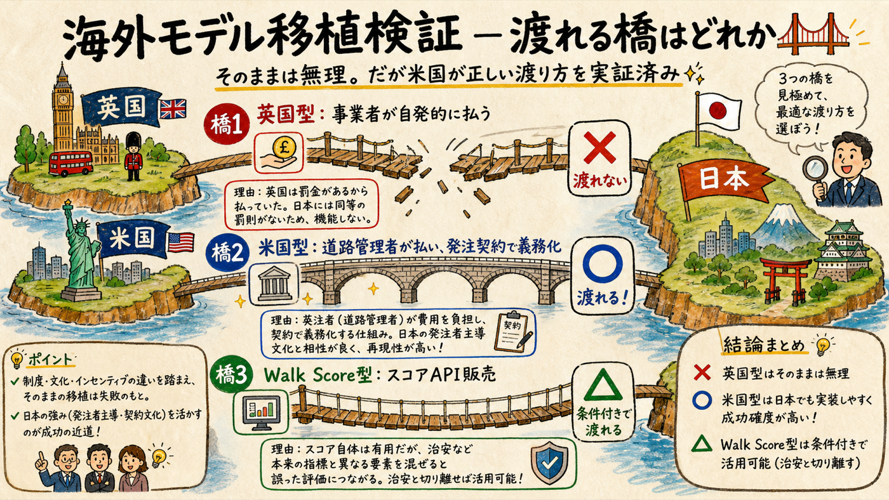
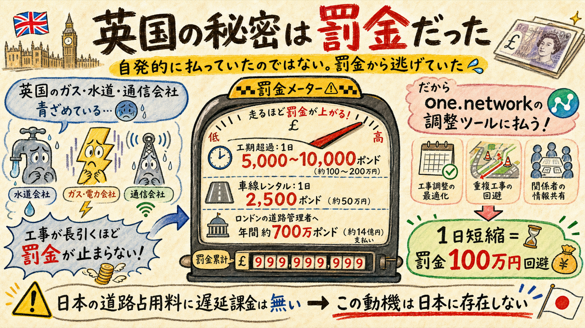
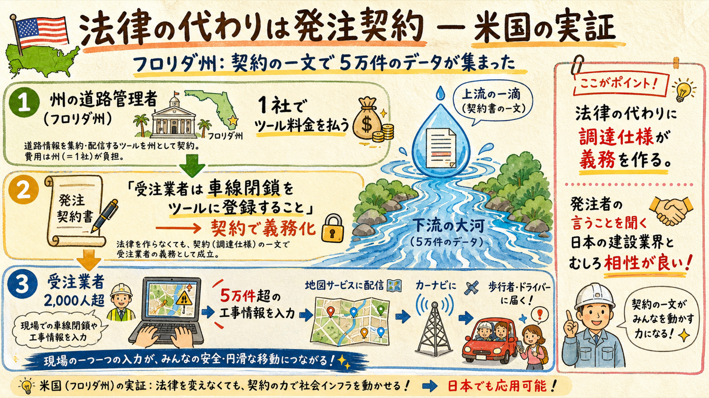
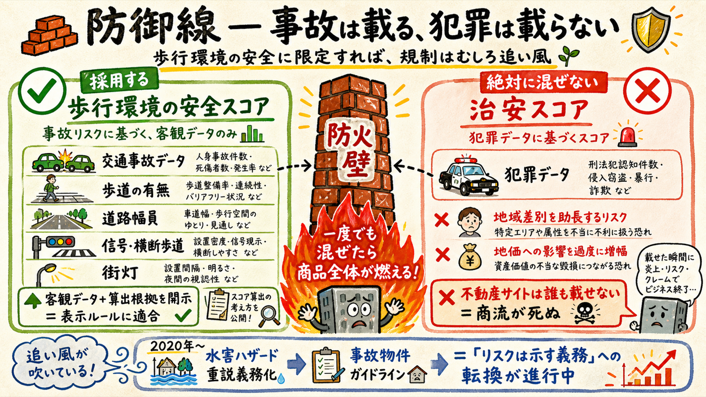

one.network（英）とWalk Score（米）の成功要因を一次情報で分解し、日本の商習慣で再現するかを検証した。結論: 英国型の「工事事業者が自発的に払う」は法定罰金が作った動機で日本では再現しない。しかし法義務のない米国でone.networkが見つけた売り方 — 道路管理者が1社で払い、発注契約で受注業者に入力を義務化 — は、発注者主導の日本の建設商習慣とむしろ相性が良い。
3つのモデルを個別に判定した

| モデル | 日本移植の判定 | 根拠 |
|---|---|---|
| 英国型: 工事事業者・ユーティリティが自発的にサブスク | ✕ 再現しない | 支払い動機は法定罰金の回避（セクション02）。日本の道路占用制度に遅延課金は無い |
| 米国型: 道路管理者が払い、発注契約で受注業者に義務化 | ◯ 再現可能性高 | 法義務なしのフロリダ・テキサス・ユタで実証済み（セクション03）。発注者主導は日本の建設業の基本構造 |
| Walk Score型: 住所スコアの不動産向けAPI販売 | △ 条件付き成立 | 「地域スコアのB2Bデータ販売」は国内でマンションレビューが既に実証。ただし治安データと完全に切り離すことが条件（セクション05） |
ここは正直に認める: 前提が一つ崩れた

英国では法定の金銭ペナルティが工事事業者を直撃する: Section 74 工期超過課金は交通重要路線で最初の3日£5,000/日、以降£10,000/日（約200万円/日）（一次: 英国法令 UKSI 2012/2272）。車線レンタル制は占用1日£2,500で、ロンドン交通局にはユーティリティ各社が2022年度だけで計約£700万を支払った（一次: TfL）。つまり「工事を1日早く終える調整ツール」は英国では罰金回避装置であり、one.networkの営業資料自身が「規制インセンティブ」を売り文句にしている。
日本への含意: 日本の道路占用料に遅延課金はなく、この支払い動機は存在しない。つまり「施工会社が自発的にマップ掲載料を払う」というB2B仮説は、英国の実例を根拠にはできない（米国でもユーティリティの自発課金は確認されなかった）。現場HP＋QR受託は「小口の周知・イメージアップ受託」として残すが、B2BのSaaS的な継続課金の期待値は下げる。9月ヒアリングの検証項目はこの残存仮説に絞る。
日本と同じ「法義務なし」の市場で、実際に動いた方法

米国にはNRSWA相当の統一法義務がない。その米国でone.networkは2020年参入以降、フロリダDOT（2023年全州パイロット→2024年3年契約）、テキサスNCTCOG（230超自治体の共同調達で選定）、ユタDOT（2025年全州契約）等を獲得した。核心はフロリダDOTが新規道路工事の全受注業者に対し、車線閉鎖のツール登録を発注契約で義務化したこと — 受注業者2,000人超が累計5万件超を登録した（一次: 企業発表／二次: 業界誌）。売り文句は「作業員の安全（2023年の米国work zone死者899人）」と「Waze・Google・Apple・TomTomへのリアルタイム配信」。
これは3層データ戦略L2の実証そのもの。「自治体がB2G契約時に、受注者への工事情報入力を仕様化する」という日本向けの設計は、思いつきではなく英米両方で動いている唯一のパターンだと確認できた。しかも「発注者の仕様に従う」のは日本の建設業界の最も強い商習慣 — 移植先の土壌はむしろ英米より適している可能性がある。
「自治体はSaaSを買わない」は2026年時点ではもう古い
| 懸念された商習慣 | 2026年の実態（一次情報） |
|---|---|
| 自治体はサブスクを買わない | LoGoフォーム800自治体超（全体の約45%）、Graffer190自治体超・政令市の70%以上。人口規模別月額課金モデルが普通に通っている |
| 単年度会計で複数年契約できない | 地方自治法234条の3「長期継続契約」＋債務負担行為で制度解決済み。総務省が2010年にSaaS契約ひな形まで提示 |
| 実績のない事業者は入れない | SBIR認定なら納入実績不問で入札参加可。トライアル発注制度、神戸市の実証→随契制度。PoC→本契約の転換率は約53%（Urban Innovation JAPAN実績） |
| 調達手続きが個人に開かれていない | デジタル庁DMP（日本版G-Cloud）が2025年3月から調達機能稼働。363社441SaaS、中小55%＋スタートアップ20%超。個人事業主の規模制限なし |
工事情報マップに特有の残る壁は2つ。①データ管理者の分断: 国道は国交省の電子申請があるが、警察の道路使用許可は工事の新規申請が未オンライン化で、網羅的な電子データがまだ揃わない。②「無料の公的公開が既にある」問題: 都は都道の工事情報を無料公開しており（粗いとはいえ）、「なぜ有料か」の説明責任が通常のGovTechより重い。答えは「粒度と歩行者UX」で作るしかない — L1デモがそのまま説明資料になる。
※ 出典: デジタル庁DMP公式、トラストバンク発表、Graffer公式、総務省ガイドライン、内閣府調達ガイドブック、UIJ発表。2026-07-10取得。
規制はむしろ追い風。地雷は1つだけ

検証は仮説を壊すためにやる。今回は1つ壊れて2つ強まった
| 項目 | 検証前 | 検証後 |
|---|---|---|
| B2B（施工会社の自発課金） | ビラとの天秤で払うかも [仮説] | 下方修正。英米とも自発課金の実例なし。現場HP受託は小口受託として維持、SaaS化はB2G仕様化の後 |
| B2G（3層戦略L2: 発注仕様で入力義務化） | 英国の法律の「代替案」[仮説] | 強化。フロリダが同じ構造で実証済み。日本の発注者主導文化とも整合。これが本命中の本命 |
| おさんぽスコア | 国内空白 [仮説] | 強化＋設計条件確定。重説義務化の追い風・B2Bデータ販売の国内実証あり。「犯罪と混ぜない」を設計原則として固定 |
| 新アクション | — | ①DMPへの事業者登録（個人可・8月）②UIJ型実証プログラムの応募検討 ③9月ヒアリングの質問を「発注者から求められる周知・報告」中心に再設計 |